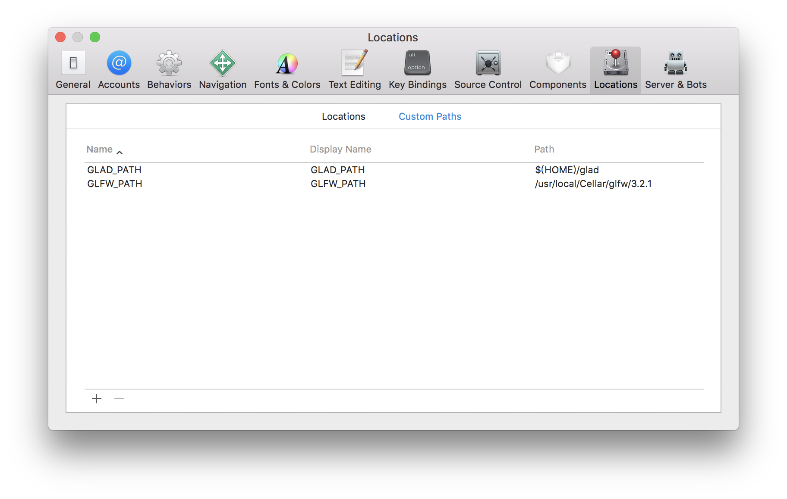
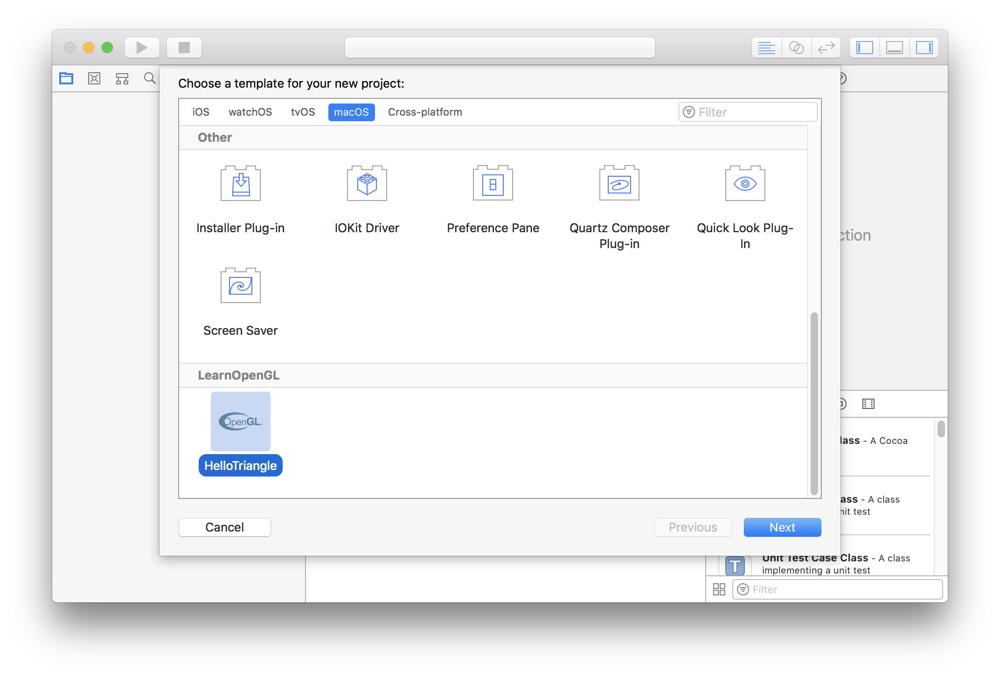
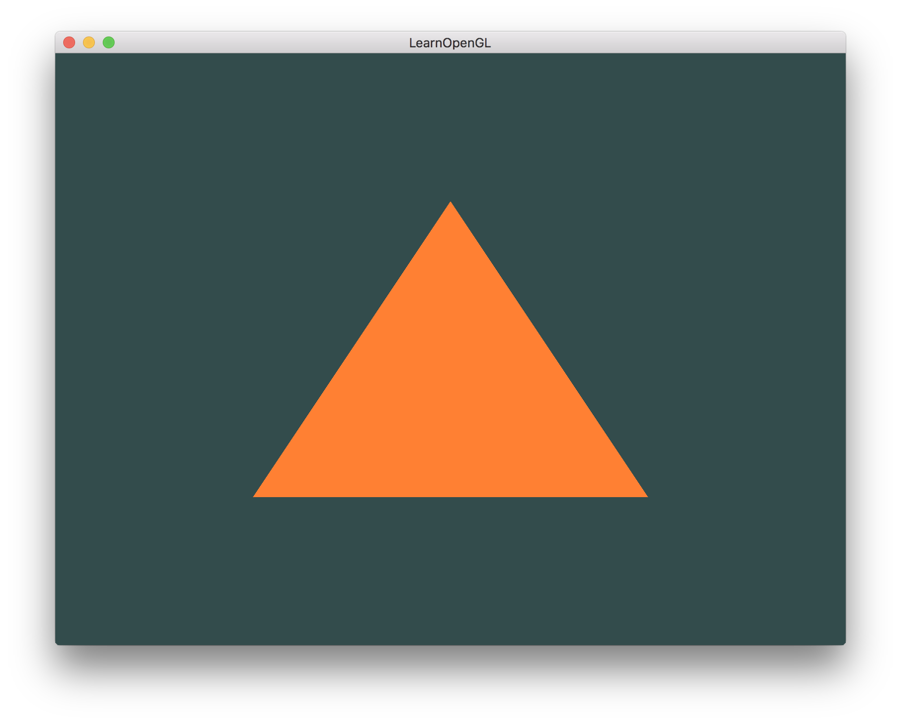

最近通过LearnOpenGL教程学习OpenGL，里面有详细的例程帮助我快速了解OpenGL的编程思路。刚开始在教程的每一小节中，我都按照教程里面讲解的步骤一步一步的敲击着代码，但是当我熟悉之后，发现没创建一个Xcode项目，我必须每一次都要设置相同的编译选项和参数，并且需要写重复的GLFW代码。因此我写了一个OpenGL的Xcode的项目模板，利用这个模板，在每次创建OpenGL的Xcode项目时可以节省一些时间。
接下来我会介绍怎么使用这个模板。
准备工作
使用Xcode编写OpenGL程序需要用到GLFW和GLAD。
安装GLFW
执行shell命令：1
brew install glfw
安装成功后，可以在/usr/local/Cellar/glfw目录下找到对应版本的头文件和库文件。
在线生产GLAD
在GLAD的在线服务网站上，Language选择C/C++，Specification选择OpenGL，API/gl选择3.3，Profile选择Core，Options勾选Generate a loader。点击GENERATE生成库文件。将glad.zip解压到$HOME目录下。
安装Xcode
通过App Store下载Xcode。
配置Xcode
选择Xcode->Preferences…->Locations->Custom Paths，配置如下：

使用模板
执行shell命令：1
git clone https://github.com/huntto/Xcode-LearnOpenGL-Templates ~/Library/Developer/Xcode/Templates/Project\ Templates/Mac/LearnOpenGL
创建项目时，可以看到如下的模板选项：

创建完项目后，直接点击运行后的结果如下图所示：

参考文档
[1]. LearnOpenGL
[2]. How to Create Custom Project Templates in Xcode 7